-
1) Для более удобного хранения сайта мы можешь воспользоватся сервисом GitHub, которой так же дает возможность выгрузки сайта в интернет.
-
2) После регистрации нужно будет создать репозиторий:
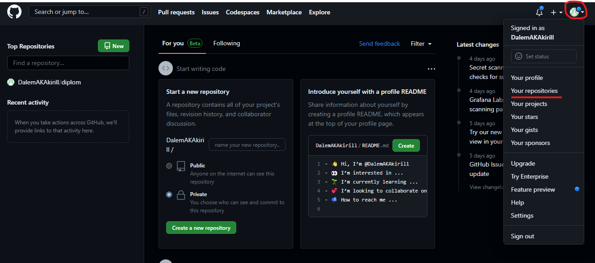
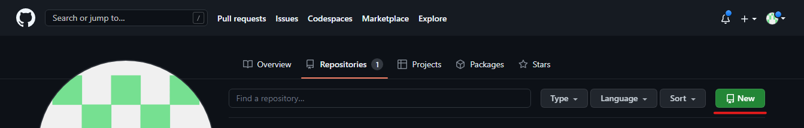
Далее вы задаете имя своего репазитория и создаете его.
После нам надо будет занести какой нибудь документ в репазиторий.
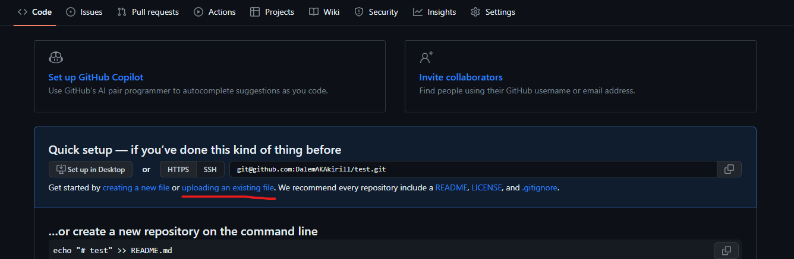
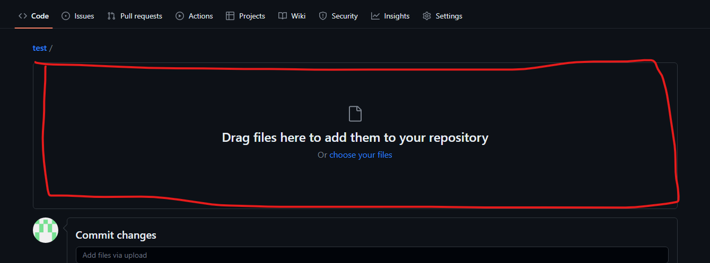
Переносим выбранный файл в данное поле.
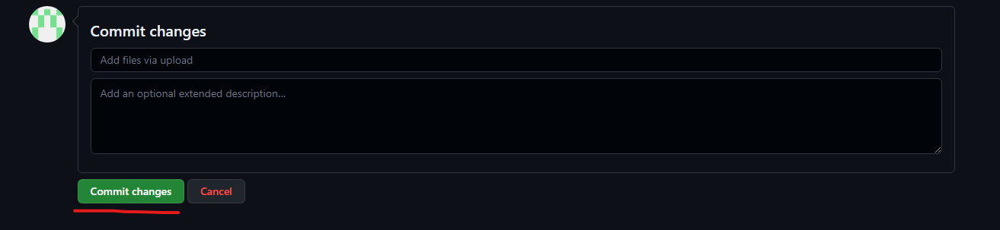
Далее нам следует произвести "комит", то есть внести изменения в репазиторий.
-
3) Работа с репазиторием:
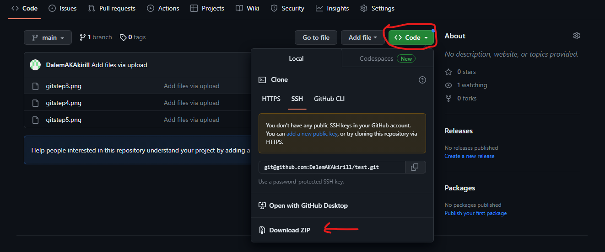
В данном скриншоте показывается как мы можем скачать наш проект архивом.
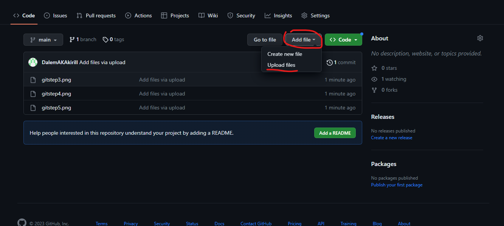
Если вы применили какие то изменения в своем проекте или создали новые файлы то лучшем решением станит полный комит всего проекта.
-
4) Выгрузка сайта в интернет с помощью GitHub:
Для выгрузки сайта в интернет с помощью GitHub нам понадобится перейти в настройки репазитория, затем перейти в раздел page (страница).
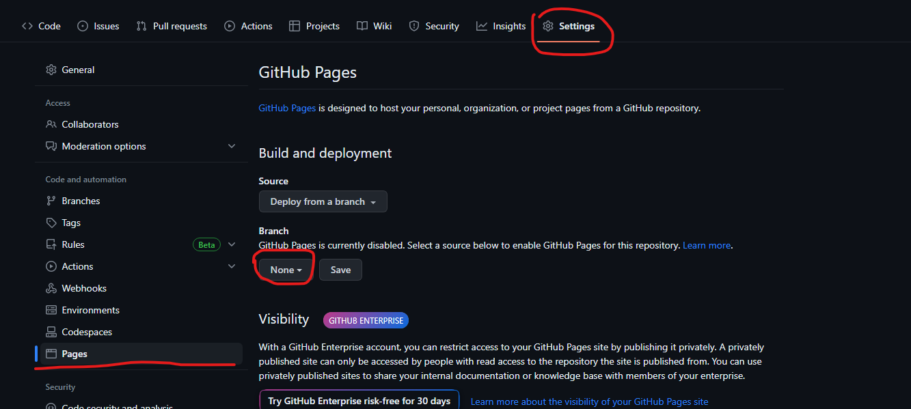
Далее нам нужно выбрать ветку (branch). Выюираем главную (main) и нажимаем сохранить.
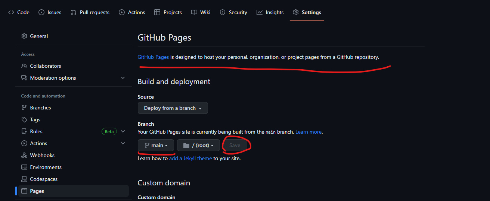
Затем GitHub нам сгенерирует собственную ссылку на наш сайт (это может занять несколько минут)
обязательно что бы git сформировал ваш сайт в структуре папок должен быть файл с названием index.html .
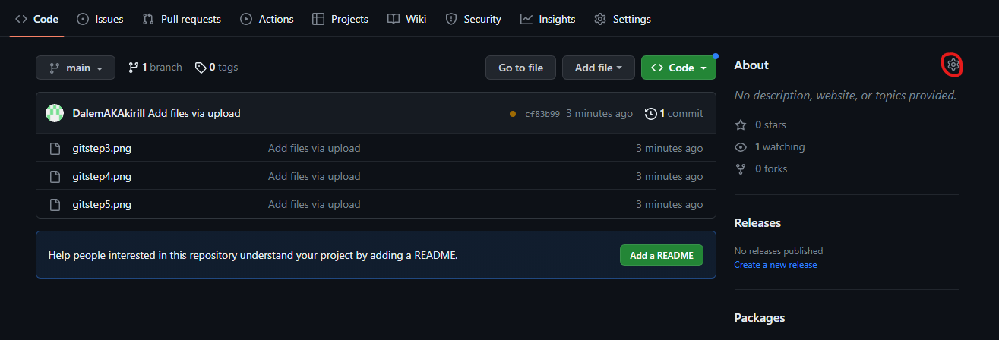
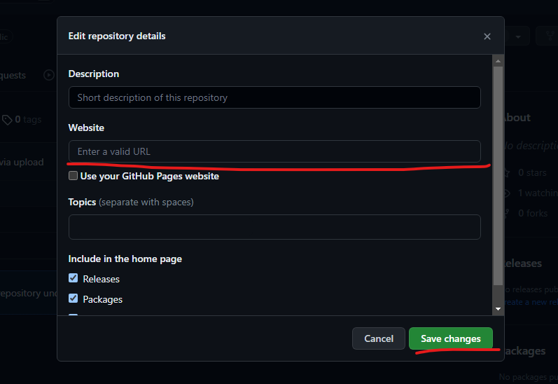
Для удобства предлагаю скопировать адресс вашего сайта созданный git и вставить его в поле Website в описание репазитория.
Назад